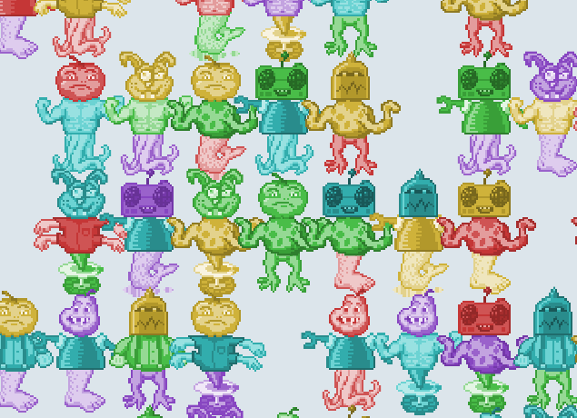

Algorithms / Matching
Stable Matching
An implementation of Gale–Shapley: pair two groups by preference while ensuring no pair would prefer each other to their assigned partners.

Algorithms / Matching
An implementation of Gale–Shapley: pair two groups by preference while ensuring no pair would prefer each other to their assigned partners.
